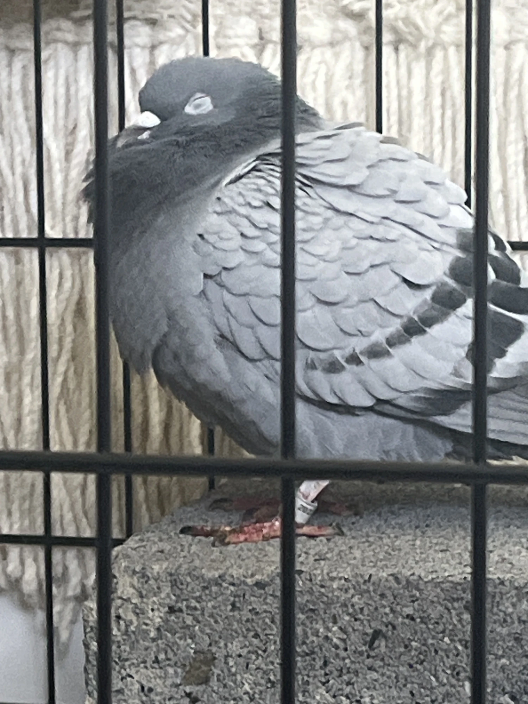
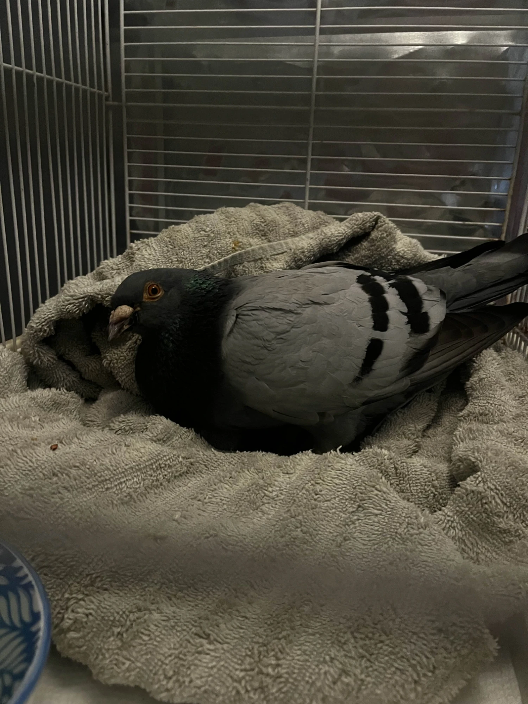
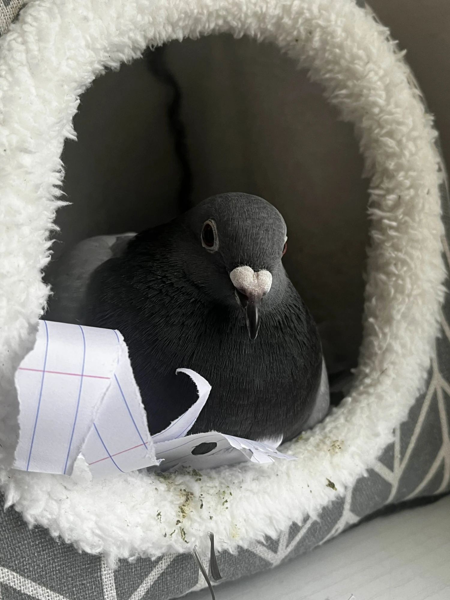

October 8, 2026
Marilynn Walz
I was 18 years old when I adopted Violet from Pigeons as Pets Rescue near Morgantown, WV. She was this sweet little blue bar, just 400 grams of pure fluff and cuteness.

I had been in contact with a few rescues before, one of which was
Derby City Pigeon Rescue. I owe Meredith a lot
for helping me get into rescue. I could mention at least half a dozen people who taught me, but they were the first to really break me into it.
Korys was the first intake. Meredith texted me one day, "How close are you from [X] county?"
"I'm in [X] county."
I got the poor lost racer an hour later. One dark green band and one lime green, but no telling where he came from. No band to mark what loft he
was trying to fly to. No name. No number. Just two colors to differentiate him from the dozens or hundreds of others that looked like him. We
dubbed him Korys.
His keel bone was a knife in my hands, and every movement felt like I might break him. He fought, but weakly, and every moment I was holding him
felt like a moment he might slip out of my weak grip. I hopped on a call with them and tried to explain everything as best I could. I warmed him.
Fed him warm, thawed peas. Put him in a towel donut to try and keep him upright enough to drink and eat on his own. He didn't eat on his own.

He passed just hours after I went to bed. He was still in the towel. With all my efforts, he still passed. It was the first rescue I ever had,
and the first fail. It also won't be my last. That's the thing with rescue: no matter the animal. You can't save them all.
I've also had a few people be upset that I was unable to do more for them. I had one person lie to others publicly. They claimed I said I could
not provide help, and they had told people that they wanted baby pigeons removed so predators didn't get them. Our private messages said much
differently. It's a big switch from "they're messing up my roof" to "I'm worried about predators."
I'm not a pigeon removal service. So where did they get that idea from?
I also have an issue with rescues who take in pigeons. One sorry excuse for a rescue breeds their rescue pigeons, has gotten rid of all of their
birds, and then keeps posting asking for more. Their "hundreds of birds saved in a year" is either a lie, or they are putting themselves into
financial ruin. Another rescue does something similar.
There are quite a few other rescues I have issues with. Why are you running a rescue and breeding rescue birds at the same time...? That's less
space for the birds who need rescue. That's less homes to adopt actual rescues out to, since you're breeding birds of unknown origin and sending
them to homes instead of your current residents. That's selfish.
I won't call rescues out publicly unless they've done some very vile actions. And I absolutely do when having a one-on-one conversation. I do
call out a solid few publicly when they recommend themselves.
We talk about the losses because they matter. We talk about the sadness of losing a bird, because it does hurt when you try everything you can
and they don't pull through.
You can't save every bird. And anyone who hasn't lost a bird hasn't been rescuing and rehabilitating long enough.
